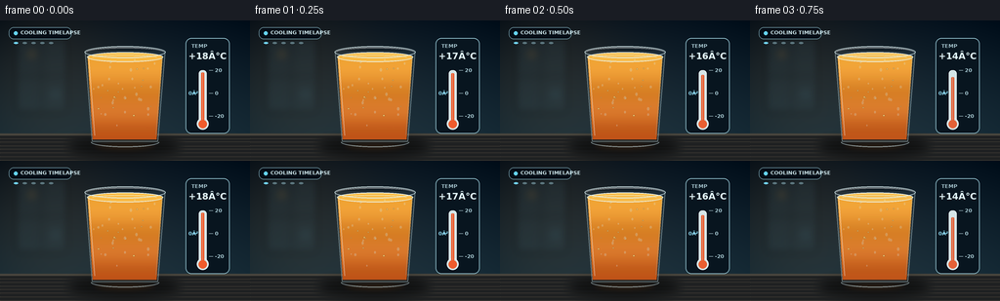
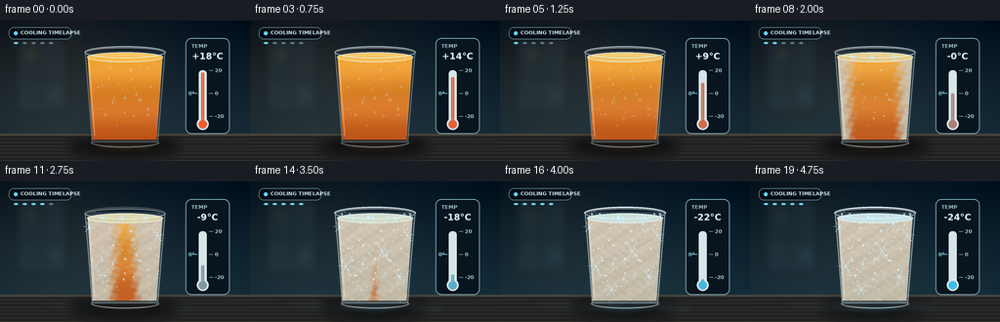
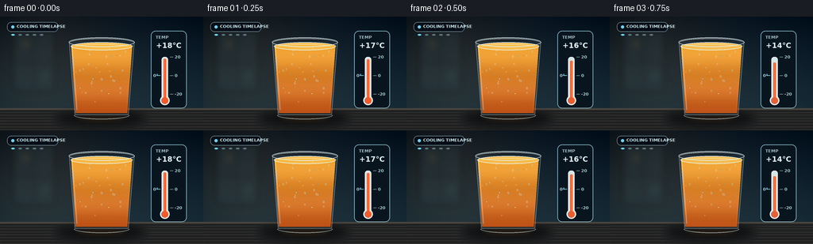

CODING AGENTS AS PIXEL WORLD MODELS
traex/GPT-5.6-Sol · phygen_092
点击播放 · 原生 RGB 像素
逐轮保存的候选
回放视频、检查图与代码变化。
每份候选均可单独播放。实际图片检查记录在下方工具轨迹中。
候选 01播放与检查图
点击播放 · 原生 RGB 像素
展开代码变化
--- 上一保存版本
+++ 本次保存版本
@@ -0,0 +1,351 @@
+"""Generate a short, entirely procedural timelapse of juice flash-freezing."""
+
+from pathlib import Path
+import json
+import math
+import random
+
+import numpy as np
+from PIL import Image, ImageDraw, ImageFont, ImageFilter, ImageChops
+
+import artifact_io
+
+
+ROOT = Path(__file__).resolve().parent
+SPEC = json.loads((ROOT / "task_spec.json").read_text())
+W, H = SPEC["width"], SPEC["height"]
+N = SPEC["frames"]
+S = 4 # antialiasing render scale
+random.seed(9207)
+
+
+def sc(v):
+ return int(round(v * S))
+
+
+def pts(values):
+ return [(sc(x), sc(y)) for x, y in values]
+
+
+def font(size, bold=False):
+ name = "DejaVuSans-Bold.ttf" if bold else "DejaVuSans.ttf"
+ path = Path("/usr/share/fonts/truetype/dejavu") / name
+ return ImageFont.truetype(str(path), sc(size))
+
+
+FONT_5 = font(5.2, True)
+FONT_6 = font(6.2, True)
+FONT_9 = font(9.2, True)
+
+# Stable details acquire frost one after another through the timelapse.
+droplets = []
+for _ in range(34):
+ y = random.uniform(40, 116)
+ t = (y - 31) / 96
+ left, right = 88 + 6*t, 168 - 7*t
+ droplets.append((random.uniform(left+3, right-3), y,
+ random.uniform(.45, 1.25), random.uniform(0, 1)))
+
+frost_specks = []
+for _ in range(145):
+ y = random.uniform(30, 124)
+ t = (y - 30) / 94
+ left, right = 87 + 7*t, 169 - 8*t
+ x = random.uniform(left, right)
+ edge = min(x-left, right-x) / max(1, (right-left)/2)
+ threshold = .18 + .43*edge + random.uniform(-.10, .16)
+ frost_specks.append((x, y, random.uniform(.18, .75), threshold))
+
+crystals = [
+ (91, 47, 6.0, .33, .15), (161, 55, 7.3, .38, -.08),
+ (98, 87, 8.2, .48, .06), (153, 98, 8.0, .54, -.13),
+ (121, 37, 5.5, .58, .04), (135, 71, 10.5, .65, -.04),
+ (114, 111, 7.0, .72, .12), (146, 43, 4.7, .78, .0),
+]
+
+
+def smoothstep(a, b, x):
+ x = max(0.0, min(1.0, (x-a)/(b-a)))
+ return x*x*(3-2*x)
+
+
+def rgba_layer():
+ return Image.new("RGBA", (W*S, H*S), (0, 0, 0, 0))
+
+
+def blurred_ellipse(base, box, color, blur):
+ lay = rgba_layer()
+ d = ImageDraw.Draw(lay)
+ d.ellipse(tuple(sc(v) for v in box), fill=color)
+ base.alpha_composite(lay.filter(ImageFilter.GaussianBlur(sc(blur))))
+
+
+def draw_crystal(draw, cx, cy, radius, alpha, phase=0.0, width=.48):
+ """A six-fold dendritic frost crystal with small side branches."""
+ if alpha <= 2:
+ return
+ col = (224, 246, 255, int(alpha))
+ glow = (164, 221, 245, int(alpha*.48))
+ for j in range(6):
+ a = phase + j*math.pi/3
+ ux, uy = math.cos(a), math.sin(a)
+ ex, ey = cx + ux*radius, cy + uy*radius
+ draw.line((sc(cx), sc(cy), sc(ex), sc(ey)), fill=col,
+ width=max(1, sc(width)))
+ # Two opposing barbs on the outer half of each arm.
+ for frac in (.55, .76):
+ bx, by = cx + ux*radius*frac, cy + uy*radius*frac
+ for side in (-1, 1):
+ aa = a + side*2.30
+ ll = radius*(.22 if frac < .7 else .17)
+ draw.line((sc(bx), sc(by), sc(bx+math.cos(aa)*ll),
+ sc(by+math.sin(aa)*ll)), fill=glow,
+ width=max(1, sc(width*.72)))
+ draw.ellipse((sc(cx-.8), sc(cy-.8), sc(cx+.8), sc(cy+.8)), fill=col)
+
+
+def base_background(p):
+ """Blue-black kitchen background with a restrained warm side light."""
+ hh, ww = H*S, W*S
+ yy, xx = np.mgrid[0:hh, 0:ww]
+ yn, xn = yy/hh, xx/ww
+ cold = p*.18
+ top = np.array([10, 23, 35], float)
+ bot = np.array([33, 55, 66], float)
+ arr = top[None, None, :]*(1-yn[..., None]) + bot[None, None, :]*yn[..., None]
+ # soft amber light at left, increasingly overpowered by the chill
+ warm = np.exp(-(((xn-.19)/.34)**2 + ((yn-.34)/.63)**2))* (1-p*.45)
+ arr += warm[..., None]*np.array([20, 10, 0])
+ arr += cold*np.array([-13, 7, 19])[None, None, :]
+ # vignette
+ vign = np.clip(((xn-.5)/.67)**2 + ((yn-.52)/.86)**2, 0, 1)
+ arr -= vign[..., None]*12
+ return Image.fromarray(np.uint8(np.clip(arr, 0, 255)), "RGB").convert("RGBA")
+
+
+def draw_background(base, p):
+ # Defocused window/cabinet geometry, safely behind the hero object.
+ lay = rgba_layer()
+ d = ImageDraw.Draw(lay)
+ d.rounded_rectangle((sc(16), sc(18), sc(69), sc(94)), radius=sc(4),
+ fill=(51, 76, 86, 55), outline=(110, 145, 148, 25), width=sc(.7))
+ d.line((sc(42), sc(19), sc(42), sc(94)), fill=(7, 19, 29, 60), width=sc(2))
+ d.line((sc(17), sc(57), sc(68), sc(57)), fill=(7, 19, 29, 55), width=sc(2))
+ d.ellipse((sc(29), sc(31), sc(36), sc(38)), fill=(235, 172, 78, int(55*(1-p))))
+ d.ellipse((sc(53), sc(72), sc(60), sc(79)), fill=(103, 190, 220, int(28+35*p)))
+ base.alpha_composite(lay.filter(ImageFilter.GaussianBlur(sc(4))))
+
+ # Countertop and its subtle grain.
+ d = ImageDraw.Draw(base, "RGBA")
+ d.rectangle((0, sc(116), sc(W), sc(H)), fill=(31, 33, 34, 255))
+ d.rectangle((0, sc(116), sc(W), sc(118)), fill=(72, 69, 61, 255))
+ for j in range(7):
+ y = 121 + j*3.7
+ d.line((0, sc(y), sc(W), sc(y+random.Random(j).uniform(-.7, .7))),
+ fill=(102, 91, 75, 18), width=sc(.45))
+ # Heavy glass shadow and a little reflected orange/cyan light.
+ blurred_ellipse(base, (72, 119, 182, 139), (0, 0, 0, 120), 5)
+ reflected = (225, 114, 24, int(30*(1-p))) if p < .7 else (114, 202, 231, int(17+20*p))
+ blurred_ellipse(base, (94, 124, 161, 134), reflected, 3)
+
+
+def draw_cold_vapor(base, p, frame):
+ amount = smoothstep(.40, .92, p)
+ if amount <= 0:
+ return
+ mist = rgba_layer()
+ d = ImageDraw.Draw(mist)
+ # Layered low, curling fog remains subtle enough not to obscure the glass.
+ for k in range(6):
+ x = 59 + k*23 + math.sin(frame*.31+k*2.1)*6
+ y = 125 + (k % 2)*5
+ d.ellipse((sc(x-22), sc(y-4), sc(x+25), sc(y+5)),
+ fill=(190, 228, 239, int((10+8*(k%3))*amount)))
+ mist = mist.filter(ImageFilter.GaussianBlur(sc(4.2)))
+ base.alpha_composite(mist)
+
+
+def draw_juice(base, p, frame):
+ # Inner trapezoid and opaque-ish fluid gradient. Freezing propagates inward
+ # from the cold wall and down from the exposed top surface.
+ hh, ww = H*S, W*S
+ yy, xx = np.mgrid[0:hh, 0:ww]
+ xf, yf = xx/S, yy/S
+ y0, y1 = 37.2, 122.0
+ t = np.clip((yf-y0)/(y1-y0), 0, 1)
+ left, right = 89.5+5.2*t, 166.5-6.2*t
+ inside = (yf >= y0) & (yf <= y1) & (xf >= left) & (xf <= right)
+ edge_dist = np.minimum(xf-left, right-xf) / np.maximum(1, (right-left)/2)
+ edge_dist = np.clip(edge_dist, 0, 1)
+ # Onset is earliest at side walls and surface, latest deep in the core.
+ onset = .10 + .44*edge_dist + .20*t*edge_dist
+ noise = .025*np.sin(xf*.63 + yf*.31) + .018*np.sin(yf*.91-xf*.22)
+ freeze = np.clip((p-onset-noise)/.25, 0, 1)
+ freeze = freeze*freeze*(3-2*freeze)
+
+ top = np.array([255, 169, 40.], float)
+ bottom = np.array([202, 78, 12.], float)
+ warm = top[None, None, :]*(1-t[..., None]) + bottom[None, None, :]*t[..., None]
+ warm += 7*np.sin((yf+frame*.6)*.15)[..., None]
+ ice = np.zeros_like(warm)
+ ice[..., 0] = 194 + 23*(1-t)
+ ice[..., 1] = 205 + 15*(1-t)
+ ice[..., 2] = 204 + 15*(1-t)
+ # Retain a frozen orange core so the object remains unambiguously juice.
+ ice = .72*ice + .28*np.array([226, 139, 54.])
+ rgb = warm*(1-freeze[..., None]) + ice*freeze[..., None]
+ # mottled entrained slush
+ mott = (np.sin(xf*.52)*np.sin(yf*.77) + np.sin(xf*.19+yf*.34))*4*freeze
+ rgb += mott[..., None]
+ alpha = np.where(inside, 245, 0).astype(np.uint8)
+ arr = np.dstack([np.uint8(np.clip(rgb, 0, 255)), alpha])
+ base.alpha_composite(Image.fromarray(arr, "RGBA"))
+
+ d = ImageDraw.Draw(base, "RGBA")
+ # Fluid/frozen top surface ellipse. A tiny highlight migrates as it clouds.
+ surf_fill = tuple(int((1-p)*a+p*b) for a, b in zip((255, 183, 55), (207, 226, 226))) + (235,)
+ d.ellipse((sc(89), sc(32.5), sc(167), sc(42.5)), fill=surf_fill,
+ outline=(245, 252, 249, int(80+90*p)), width=sc(.65))
+ d.arc((sc(94), sc(35), sc(161), sc(40.8)), 190, 350,
+ fill=(255, 226, 151, int(145*(1-p))), width=sc(.7))
+ if p > .25:
+ ice_alpha = int(210*smoothstep(.25, .76, p))
+ for x, ang in [(105, -.25), (125, .16), (148, -.10)]:
+ draw_crystal(d, x, 37.3, 4.3, ice_alpha, ang, .42)
+
+ # Suspended pulp/bubbles vanish as the juice solidifies.
+ fade = (1-smoothstep(.18, .76, p))
+ for k in range(14):
+ rr = random.Random(1200+k)
+ x, y = rr.uniform(99, 157), rr.uniform(48, 113)
+ r = rr.uniform(.35, .85)
+ d.ellipse((sc(x-r), sc(y-r), sc(x+r), sc(y+r)),
+ fill=(255, 202, 85, int(85*fade)),
+ outline=(118, 59, 11, int(60*fade)), width=max(1, sc(.22)))
+
+
+def draw_glass_and_frost(base, p):
+ glass = rgba_layer()
+ d = ImageDraw.Draw(glass)
+ outer = pts([(86.7, 31), (169.3, 31), (161.7, 125.5), (94.2, 125.5)])
+ # Barely visible glass body / refraction veil.
+ d.polygon(outer, fill=(185, 225, 234, 17+int(21*p)))
+ d.line(pts([(87, 32), (94.3, 124), (161.5, 124), (169, 32)]),
+ fill=(210, 237, 241, 116+int(75*p)), width=sc(.85), joint="curve")
+ d.line(pts([(90.5, 36), (96.7, 118)]), fill=(255, 255, 255, 100), width=sc(1.05))
+ d.line(pts([(166, 37), (159.4, 117)]), fill=(120, 183, 201, 80), width=sc(.65))
+ d.ellipse((sc(86.5), sc(26.3), sc(169.5), sc(38.5)),
+ outline=(223, 243, 245, 205), width=sc(1.05))
+ d.arc((sc(88), sc(27.7), sc(168), sc(37.3)), 184, 356,
+ fill=(255, 255, 255, 150), width=sc(.65))
+ d.arc((sc(93), sc(119.5), sc(163), sc(130)), 0, 180,
+ fill=(213, 238, 242, 135+int(60*p)), width=sc(1.0))
+
+ # Early condensation droplets become white frozen beads.
+ for x, y, r, q in droplets:
+ if q > p+.28:
+ a = int(80*(1-p))
+ d.ellipse((sc(x-r), sc(y-r*1.4), sc(x+r), sc(y+r*1.4)),
+ fill=(195, 232, 239, a), outline=(245, 255, 255, a), width=sc(.3))
+ elif p > .17:
+ a = int(65+130*smoothstep(.17, .82, p))
+ d.ellipse((sc(x-r), sc(y-r), sc(x+r), sc(y+r)),
+ fill=(222, 245, 250, a))
+
+ # Fine rime starts on both walls and gradually closes toward center.
+ for x, y, r, threshold in frost_specks:
+ reveal = smoothstep(threshold, threshold+.20, p)
+ if reveal > 0:
+ a = int((55+115*(r/.75))*reveal)
+ d.ellipse((sc(x-r), sc(y-r*.7), sc(x+r), sc(y+r*.7)),
+ fill=(226, 247, 251, a))
+
+ for cx, cy, rad, threshold, phase in crystals:
+ reveal = smoothstep(threshold, threshold+.19, p)
+ draw_crystal(d, cx, cy, rad*reveal, 220*reveal, phase, .54)
+
+ # Thick hoarfrost on rim and tiny icicles only at deep subzero.
+ rim = smoothstep(.50, .90, p)
+ if rim:
+ d.arc((sc(86), sc(25.8), sc(170), sc(39)), 178, 360,
+ fill=(238, 252, 255, int(235*rim)), width=sc(1.5))
+ for x, length in [(94, 4.0), (102, 2.5), (158, 3.2), (164, 5.2)]:
+ d.polygon(pts([(x-1.0, 32.5), (x+1.1, 32.5), (x, 32.5+length*rim)]),
+ fill=(211, 242, 250, int(210*rim)))
+ base.alpha_composite(glass)
+
+
+def draw_thermometer(base, p):
+ d = ImageDraw.Draw(base, "RGBA")
+ # clean instrument card, separate from the organic main action
+ d.rounded_rectangle((sc(190), sc(18), sc(235), sc(116)), radius=sc(6),
+ fill=(8, 21, 31, 164), outline=(150, 198, 211, 65), width=sc(.7))
+ d.text((sc(196), sc(23)), "TEMP", font=FONT_5, fill=(160, 190, 199, 230))
+ temp = 18 - 42*(p**.88)
+ temp_text = f"{temp:+.0f}°C"
+ # fit and center digital readout
+ bb = d.textbbox((0, 0), temp_text, font=FONT_9)
+ d.text((sc(212.5)-(bb[2]-bb[0])/2, sc(31)), temp_text,
+ font=FONT_9, fill=(225, 245, 248, 255))
+
+ x = 207.5
+ top, bottom = 51, 104
+ d.rounded_rectangle((sc(x-4), sc(top), sc(x+4), sc(bottom)), radius=sc(3.4),
+ fill=(213, 230, 232, 210), outline=(247, 254, 255, 180), width=sc(.6))
+ d.ellipse((sc(x-6), sc(bottom-4), sc(x+6), sc(bottom+8)),
+ fill=(213, 230, 232, 230), outline=(247, 254, 255, 190), width=sc(.6))
+ # Scale maps +20 at top to -25 at the bulb. The blue fluid column falls.
+ fluid_y = top + (20-temp)/45*(bottom-top)
+ color = tuple(int((1-p)*a+p*b) for a, b in zip((240, 91, 43), (61, 189, 234)))
+ d.rounded_rectangle((sc(x-1.45), sc(fluid_y), sc(x+1.45), sc(bottom+1)),
+ radius=sc(1.3), fill=color+(255,))
+ d.ellipse((sc(x-4.2), sc(bottom-2), sc(x+4.2), sc(bottom+6.4)), fill=color+(255,))
+ for value in (20, 0, -20):
+ y = top + (20-value)/45*(bottom-top)
+ d.line((sc(214), sc(y), sc(218), sc(y)), fill=(176, 207, 214, 180), width=sc(.55))
+ label = str(value)
+ d.text((sc(220), sc(y-3)), label, font=FONT_5, fill=(167, 201, 210, 210))
+ # Freezing-point marker.
+ zy = top + 20/45*(bottom-top)
+ d.line((sc(197), sc(zy), sc(202), sc(zy)), fill=(136, 218, 244, 210), width=sc(.7))
+ d.text((sc(193), sc(zy-3)), "0°", font=FONT_5, fill=(145, 219, 241, 220))
+
+
+def draw_header(base, p):
+ d = ImageDraw.Draw(base, "RGBA")
+ d.rounded_rectangle((sc(9), sc(7), sc(73), sc(19)), radius=sc(5),
+ fill=(4, 13, 22, 125), outline=(143, 191, 204, 35), width=sc(.5))
+ d.ellipse((sc(14), sc(11), sc(18), sc(15)), fill=(101, 211, 239, 235))
+ d.text((sc(21), sc(9.2)), "COOLING TIMELAPSE", font=FONT_5,
+ fill=(205, 229, 234, 235))
+ # five-stage progress dots provide a subtle timelapse cue
+ for k in range(5):
+ x = 14 + k*9
+ active = p >= k/5-.01
+ d.ellipse((sc(x), sc(22), sc(x+4.5), sc(24)),
+ fill=(113, 210, 237, 210) if active else (93, 119, 127, 75))
+
+
+def render_frame(i):
+ p = i/(N-1)
+ # ease slightly but ensure visible change in every frame
+ p = p*p*(3-2*p)
+ base = base_background(p)
+ draw_background(base, p)
+ draw_cold_vapor(base, p, i)
+ draw_juice(base, p, i)
+ draw_glass_and_frost(base, p)
+ draw_thermometer(base, p)
+ draw_header(base, p)
+ return np.asarray(base.convert("RGB").resize((W, H), Image.Resampling.LANCZOS), dtype=np.uint8)
+
+
+def main():
+ frames = np.stack([render_frame(i) for i in range(N)])
+ assert frames.shape == (N, H, W, 3) and frames.dtype == np.uint8
+ artifact_io.save(frames, ROOT)
+ print(f"saved {N} RGB frames ({W}x{H})")
+
+
+if __name__ == "__main__":
+ main()
候选 02播放与检查图
点击播放 · 原生 RGB 像素


展开代码变化
--- 上一保存版本
+++ 本次保存版本
@@ -120,7 +120,7 @@
# vignette
vign = np.clip(((xn-.5)/.67)**2 + ((yn-.52)/.86)**2, 0, 1)
arr -= vign[..., None]*12
- return Image.fromarray(np.uint8(np.clip(arr, 0, 255)), "RGB").convert("RGBA")
+ return Image.fromarray(np.uint8(np.clip(arr, 0, 255))).convert("RGBA")
def draw_background(base, p):
@@ -199,7 +199,7 @@
rgb += mott[..., None]
alpha = np.where(inside, 245, 0).astype(np.uint8)
arr = np.dstack([np.uint8(np.clip(rgb, 0, 255)), alpha])
- base.alpha_composite(Image.fromarray(arr, "RGBA"))
+ base.alpha_composite(Image.fromarray(arr))
d = ImageDraw.Draw(base, "RGBA")
# Fluid/frozen top surface ellipse. A tiny highlight migrates as it clouds.
候选 03播放与检查图
点击播放 · 原生 RGB 像素


展开代码变化
--- 上一保存版本
+++ 本次保存版本
@@ -282,7 +282,7 @@
fill=(8, 21, 31, 164), outline=(150, 198, 211, 65), width=sc(.7))
d.text((sc(196), sc(23)), "TEMP", font=FONT_5, fill=(160, 190, 199, 230))
temp = 18 - 42*(p**.88)
- temp_text = f"{temp:+.0f}°C"
+ temp_text = f"{temp:+.0f}\N{DEGREE SIGN}C"
# fit and center digital readout
bb = d.textbbox((0, 0), temp_text, font=FONT_9)
d.text((sc(212.5)-(bb[2]-bb[0])/2, sc(31)), temp_text,
@@ -308,7 +308,7 @@
# Freezing-point marker.
zy = top + 20/45*(bottom-top)
d.line((sc(197), sc(zy), sc(202), sc(zy)), fill=(136, 218, 244, 210), width=sc(.7))
- d.text((sc(193), sc(zy-3)), "0°", font=FONT_5, fill=(145, 219, 241, 220))
+ d.text((sc(193), sc(zy-3)), "0\N{DEGREE SIGN}", font=FONT_5, fill=(145, 219, 241, 220))
def draw_header(base, p):
可观测工具轨迹
实际执行的命令与返回图片。
命令 1exit 0
/bin/bash -lc "cat prompt.txt && printf '\\n--- GENERATION_RULES ---\\n' && cat GENERATION_RULES.md && printf '\\n--- TASK_SPEC ---\\n' && cat task_spec.json"
命令 2exit 0
/bin/bash -lc "find . -maxdepth 2 -type f -printf '%p\\n' | sort && printf '\\nTOOLS\\n' && command -v ffmpeg || true && command -v python3 || true"
命令 3exit 0
/bin/bash -lc 'cat artifact_io.py'
命令 4exit 0
/bin/bash -lc 'python3 generate.py'
命令 5exit 0
/bin/bash -lc "grep -n \"fromarray\\|temp_text\\|193\" generate.py | tail -10"
命令 6exit 0
/bin/bash -lc "python3 - <<'PY'
p='generate.py'
s=open(p,encoding='utf-8').read()
s=s.replace('ðC', r'\\N{DEGREE SIGN}C').replace('0ð', r'0\\N{DEGREE SIGN}')
open(p,'w',encoding='utf-8').write(s)
PY
python3 generate.py
python3 - <<'PY'
from pathlib import Path
import numpy as np
from PIL import Image
p=np.load('pixels.npz')['pixels']
assert p.shape==(144,256,20) and p.dtype==np.uint32
ims=np.stack([np.asarray(Image.open(f'frames/{i:02d}.png')) for i in range(20)])
assert ims.shape==(20,144,256,3) and ims.dtype==np.uint8
# Verify all consecutive frames differ and sequence shows substantial evolution.
d=np.abs(np.diff(ims.astype(np.int16),axis=0)).mean(axis=(1,2,3))
print('frame shape:',ims.shape,'dtype:',ims.dtype)
print('consecutive mean deltas:',np.round(d,2).tolist())
print('first-last mean delta:',round(float(np.abs(ims[-1].astype(float)-ims[0]).mean()),2))
print('artifacts:',[(x.name,x.stat().st_size) for x in map(Path,['pixels.npz','index.html','inspection.png','transition_check.png'])])
PY"命令 7exit 0
/bin/bash -lc "grep -n \"temp_text\\|193\" generate.py && find frames -maxdepth 1 -type f | wc -l && git status --short 2>/dev/null || true"
命令 8exit 0
/bin/bash -lc "python3 - <<'PY'
p='generate.py'
lines=open(p,encoding='utf-8').readlines()
for i,line in enumerate(lines):
if 'temp_text = f' in line:
lines[i] = ' temp_text = f\"{temp:+.0f}\\\\N{DEGREE SIGN}C\"\\n'
if 'd.text((sc(193)' in line:
lines[i] = ' d.text((sc(193), sc(zy-3)), \"0\\\\N{DEGREE SIGN}\", font=FONT_5, fill=(145, 219, 241, 220))\\n'
open(p,'w',encoding='utf-8').writelines(lines)
PY
sed -n '282,313p' generate.py | grep -E 'temp_text|193'
python3 generate.py
python3 - <<'PY'
from pathlib import Path
import numpy as np
from PIL import Image
files=sorted(Path('frames').glob('*.png'))
ims=np.stack([np.asarray(Image.open(f)) for f in files])
assert len(files)==20 and ims.shape==(20,144,256,3) and ims.dtype==np.uint8
assert np.load('pixels.npz')['pixels'].shape==(144,256,20)
assert all(np.any(ims[i]"'!=ims[i-1]) for i in range(1,20))
assert all(Path(x).stat().st_size>0 for x in ['"'pixels.npz','index.html','inspection.png','transition_check.png'])
print('final validation passed; 20 RGB frames, all temporally distinct')
PY"保存候选 3 份；完成命令 8 次；可验证图片返回 0 张。原始 API 响应与完整日志保留在本地。